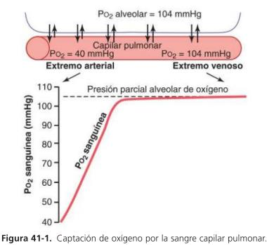
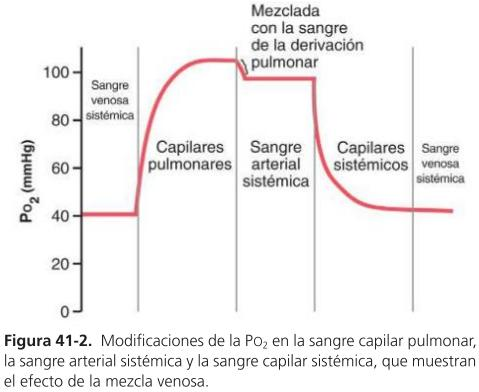
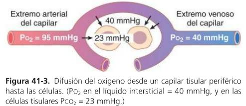
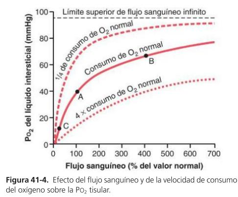
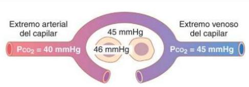
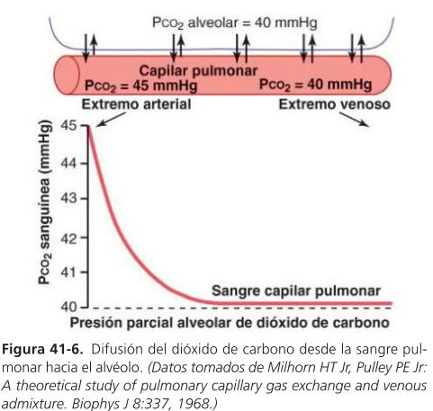
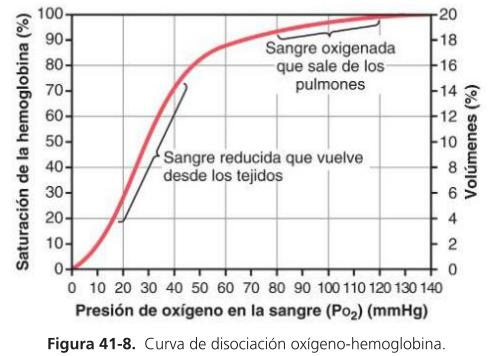
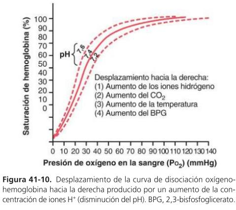
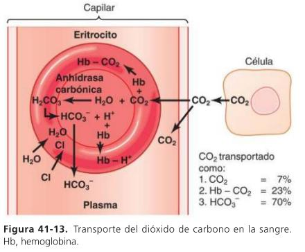
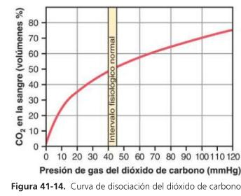

🩸 Capítulo 41 — Transporte de Oxígeno y Dióxido de Carbono en la Sangre y los Líquidos Tisulares
ClinicusMed · Guyton & Hall, Tratado de Fisiologia Médica, 14ª ed. · Dossiê Clinicus — Padrão de Excelência
Nv. 1
0 XP
Introdução — Da Difusão ao Transporte
O O₂ difunde dos alvéolos para o sangue pulmonar e é transportado quase totalmente ligado à hemoglobina (Hb) dentro dos eritrócitos — a Hb permite transportar de 30 a 100 vezes mais O₂ do que ficaria dissolvido livre no plasma.
Nos tecidos, o O₂ é usado nas reações metabólicas que geram CO₂. Esse CO₂ é levado de volta aos pulmões e também se combina com substâncias químicas do sangue, o que multiplica de 15 a 20 vezes sua capacidade de transporte.
Captação de O₂ pelo Sangue Pulmonar

Figura 41-1. Captação de oxigênio pela sangue capilar pulmonar.
Local
PO₂
Alvéolo
104 mmHg
Sangue venoso (chegando ao capilar)
40 mmHg
✅ Número-chave: diferença de 64 mmHg impulsionando a difusão do O₂ pro capilar pulmonar.
Captação de O₂ Durante o Exercício
No exercício muito intenso, o corpo pode precisar de até 20 vezes mais O₂ que o normal. O gasto cardíaco aumenta e o tempo de trânsito da sangue no capilar pulmonar cai pra menos da metade — mesmo assim, a sangue sai quase totalmente saturada.
🧠 Por que isso é possível — 2 motivos: 1) A capacidade de difusão de O₂ aumenta ~3x no exercício (mais área capilar recrutada + melhor relação ventilação-perfusão nos ápices).
2) A sangue já satura quase por completo no primeiro terço do capilar em repouso — os outros 2/3 são margem de segurança, então mesmo com menos tempo de trânsito, a saturação se mantém quase total.
Transporte de O₂ no Sangue Arterial — Mistura Venosa

Figura 41-2. Modificações da PO₂ do sangue capilar pulmonar, arterial sistêmico e venoso sistêmico.
98% do sangue que entra no átrio esquerdo tem PO₂ = 104 mmHg. Os outros 2% vêm da circulação brônquica (que irriga os próprios pulmões) — esse é o fluxo de derivação (shunt), que não passa pelas zonas de troca gasosa e tem PO₂ = 40 mmHg.
✅ Resultado da mistura: os 2 volumes se combinam nas veias pulmonares, dando uma PO₂ final de 95 mmHg — esse é o valor "oficial" da PO₂ arterial sistêmica, sempre um pouco menor que a PO₂ alveolar pura.
Difusão de O₂ dos Capilares Periféricos ao Tecido

Figura 41-3. Difusão do O₂ desde o capilar tecidual periférico até as células.
Quando o sangue arterial (PO₂ = 95 mmHg) chega aos tecidos periféricos, a PO₂ intersticial é de 40 mmHg — diferença de 55 mmHg que faz o O₂ difundir rapidamente da sangue pro tecido, até a PO₂ capilar cair também pra 40 mmHg.
🧠 PO₂ intracelular: varia de 5 a 40 mmHg, com média de 23 mmHg — bem menor que a intersticial, porque as células estão sempre consumindo O₂. Mesmo esse valor baixo é mais que suficiente: só 1 a 3 mmHg já bastam pra sustentar todos os processos químicos celulares que usam O₂.
Fluxo Sanguíneo e Metabolismo Determinam a PO₂ Tecidual

Figura 41-4. Efeito do fluxo sanguíneo e da velocidade de consumo de O₂ sobre a PO₂ tecidual.
A PO₂ do líquido intersticial é um equilíbrio entre a taxa de transporte de O₂ ao tecido e a taxa de consumo de O₂ pelo próprio tecido.
Situação
Efeito sobre a PO₂ tecidual
↑ Fluxo sanguíneo (até 400% do normal)
PO₂ sobe de 40 → 66 mmHg (ponto A → B)
Fluxo sanguíneo infinito (teórico)
Limite superior = 95 mmHg (PO₂ da sangue arterial — nunca ultrapassa)
↓ Fluxo sanguíneo
PO₂ cai (ponto C)
↑ Consumo celular de O₂ (metabolismo)
PO₂ intersticial diminui
↓ Consumo celular de O₂
PO₂ intersticial aumenta
Difusão do CO₂ — Tecido → Sangue → Alvéolo

Figura 41-5. PCO₂ no capilar tecidual periférico.
Quando as células usam O₂, praticamente tudo vira CO₂, elevando a PCO₂ intracelular — isso faz o CO₂ difundir das células pro capilar e depois pros pulmões.
✅ Diferença crucial: o CO₂ difunde ~20 vezes mais rápido que o O₂ — por isso as diferenças de pressão necessárias pro CO₂ são muito menores que as do O₂ (compare: 55 mmHg de gradiente pro O₂ tecidual vs. apenas 1 mmHg de gradiente pro CO₂ tecidual — 46 mmHg no capilar vs. 45 mmHg na célula).

Figura 41-6. Difusão do CO₂ desde a sangue capilar pulmonar até o alvéolo.
No capilar pulmonar, a diferença é de apenas 5 mmHg (45 mmHg no sangue que entra vs. 40 mmHg no ar alveolar) — o suficiente pra toda a difusão necessária, com a PCO₂ igualando a alveolar antes de percorrer 1/3 do capilar (mesmo padrão do O₂, só que na direção oposta).
Hemoglobina e a Curva de Dissociação O₂-Hb

Figura 41-8. Curva de dissociação oxigênio-hemoglobina.
Em condições normais, 97% do O₂ levado dos pulmões aos tecidos vai combinado com a Hb (formando oxihemoglobina — HbO₂); só 3% circula livre dissolvido no plasma. A ligação é laxa e reversível: PO₂ alta → O₂ se liga à Hb; PO₂ baixa → O₂ se solta.
Local
PO₂
Saturação da Hb
Sangue arterial
95 mmHg
97%
Sangue venoso
40 mmHg
~75%
🧠 A conta que mais cai em prova: 15 g de Hb por 100 ml de sangue × 1,34 ml de O₂/g = 20 ml de O₂ por 100 ml de sangue (100%). Na artéria (97% sat.) transportam-se 19,4 ml; na veia (75% sat.), 14,4 ml — ou seja, ~5 ml de O₂ são liberados aos tecidos por 100 ml de sangue em repouso, podendo triplicar até 15 ml no exercício intenso.
✅ Coeficiente de utilização: % de sangue que cede seu O₂ ao passar pelos capilares teciduais. Normal ≈ 25%; no exercício intenso pode subir a 75-85% no corpo todo.
Fatores que Deslocam a Curva de Dissociação — Efeito Bohr

Figura 41-10. Deslocamento da curva de dissociação O₂-Hb pra direita, produzido pela queda do pH.
🩺 Efeito Bohr: nos tecidos, o CO₂ que entra na sangue eleva H₂CO₃ e H⁺ (↓pH) → curva desvia pra direita e pra baixo → mais O₂ é liberado pros tecidos. Nos pulmões ocorre o oposto: CO₂ sai da sangue pro alvéolo → ↑pH → curva desvia pra esquerda e pra cima → favorece a captação de O₂. Um único mecanismo que otimiza os 2 lados do sistema.
Transporte do CO₂ no Sangue — 3 Formas Químicas

Figura 41-13. Transporte do CO₂ na sangue: dissolvido, carbaminohemoglobina e bicarbonato.
Em repouso, transportam-se em média 4 ml de CO₂ dos tecidos aos pulmões por 100 ml de sangue.
Forma de transporte
% do CO₂ total
Mecanismo
1. Dissolvido (CO₂ molecular)
~7%
0,3 ml/100 ml de sangue, transportado direto
2. Carbaminohemoglobina (HbCO₂)
~23%
CO₂ se liga aos radicais amino da Hb — reação reversível e laxa
✅ Desvio do cloreto (chloride shift): na forma 3, o H⁺ liberado se liga à Hb (tamponamento ácido-base) enquanto o HCO₃⁻ sai pro plasma através de uma proteína transportadora bicarbonato-cloreto — e o Cl⁻ entra no eritrócito pra compensar. Por isso os eritrócitos venosos têm mais cloreto que os arteriais.
Curva de Dissociação do CO₂ e Efeito Haldane

Figura 41-14. Curva de dissociação do CO₂.
Parâmetro
Valor
PCO₂ sangue arterial
40 mmHg
PCO₂ sangue venoso
45 mmHg
CO₂ total no sangue (repouso)
~50 volumes%
Variação por troca normal
Sobe a 52% no tecido, cai a 48% no pulmão (4 vol% trocados)
🩺 Efeito Haldane: a ligação do O₂ à Hb nos pulmões torna a Hb um ácido MAIS FORTE — isso libera H⁺, que se combina com HCO₃⁻ formando H₂CO₃ → H₂O + CO₂, que é então liberado. O mesmo mecanismo reduz a formação de carbaminohemoglobina. Resultado: o Efeito Haldane dobra tanto a liberação de CO₂ nos pulmões quanto a captação de CO₂ nos tecidos.
📚 Material de Apoio — Síntese Ampliada
⚠️ Nota de fonte: este material foi produzido a partir dos slides de aula da Profa. Michele Reis sobre este capítulo, com apoio de IA para organização e aprofundamento. Não substitui o conteúdo da professora — sempre confira com o Guia de Estudo (aba anterior) e com a professora em caso de dúvida. Baseado em Guyton & Hall, Tratado de Fisiologia Médica.
Por Que a Hemoglobina é Essencial
O O₂ é pouco solúvel em água/plasma — sem um carreador, o corpo não conseguiria transportar O₂ suficiente pra sustentar o metabolismo. A hemoglobina resolve isso permitindo transportar de 30 a 100 vezes mais O₂ do que ficaria dissolvido livre no plasma na mesma PO₂.
O mesmo raciocínio vale, de forma inversa, pro CO₂: ele já é bastante solúvel sozinho, mas combinar-se com substâncias sanguíneas (Hb e o sistema bicarbonato) ainda multiplica sua capacidade de transporte em 15 a 20 vezes.
A Lógica do Gradiente — Sempre a Mesma Regra
Etapa
PO₂ maior
PO₂ menor
Direção do O₂
Alvéolo → sangue
Alvéolo (104)
Sangue venosa (40)
Entra no sangue
Sangue → célula
Capilar (95)
Célula (23 méd.)
Entra na célula
Etapa
PCO₂ maior
PCO₂ menor
Direção do CO₂
Célula → sangue
Célula (46)
Capilar (45)
Sai da célula
Sangue → alvéolo
Sangue (45)
Alvéolo (40)
Sai do sangue
🧠 Regra única: tanto O₂ quanto CO₂ seguem sempre a mesma lei física — vão de onde a pressão parcial é MAIOR pra onde é MENOR. O que muda é só a direção de cada um (opostas) e a velocidade (CO₂ ~20x mais rápido).
Por Que o CO₂ Difunde Tão Mais Rápido que o O₂
A capacidade de difusão de um gás depende, entre outros fatores, da sua solubilidade no líquido (Lei de Henry) — não só do peso molecular. O CO₂, apesar de ser uma molécula maior que o O₂, é muito mais solúvel na água/plasma.
✅ Consequência prática: por isso o gradiente de pressão necessário pro CO₂ se equilibrar é sempre muito menor que o do O₂ — compare os 64 mmHg de gradiente do O₂ na captação pulmonar com os meros 5 mmHg do CO₂ na eliminação pulmonar. Menos "força" de pressão precisa ser gerada pra mover a mesma quantidade de gás.
Fator de Segurança da Difusão — Por Que o Exercício Não "Quebra" o Sistema
O sistema respiratório tem uma margem de segurança embutida em 2 níveis:
Capacidade de reserva: em repouso, o sangue já satura quase totalmente no primeiro terço do percurso pelo capilar pulmonar — os 2/3 restantes são "tempo de sobra".
Capacidade de expansão: no exercício, a área de superfície capilar recrutada aumenta e a relação ventilação-perfusão melhora nos ápices pulmonares, elevando a capacidade de difusão em ~3x.
Essas 2 margens combinadas explicam por que, mesmo com o tempo de trânsito caindo a menos da metade no exercício intenso, a saturação de O₂ do sangue que sai dos pulmões permanece quase total.
Shunt Fisiológico — Por Que a PO₂ Arterial Nunca é 104 mmHg
Um detalhe importante pra prova: embora o alvéolo tenha PO₂ = 104 mmHg, a PO₂ arterial sistêmica REAL é sempre um pouco menor — 95 mmHg. Isso acontece porque 2% do sangue vem da circulação brônquica (que nutre o próprio tecido pulmonar) e não passa pelas trocas gasosas alveolares — esse sangue "desviado" ainda tem PO₂ = 40 mmHg quando se mistura ao sangue recém-oxigenado nas veias pulmonares.
🩺 Correlação clínica: esse mesmo princípio de shunt fisiológico explica hipoxemias patológicas mais graves, como em cardiopatias congênitas cianóticas (com shunt direita-esquerda) ou em áreas pulmonares colapsadas/não ventiladas — quanto maior a fração de sangue "desviada", mais a PO₂ arterial cai abaixo do esperado.
Curva de Dissociação O₂-Hb — Por Que Tem Esse Formato
A curva não é uma linha reta — ela tem um formato sigmoide (em "S") característico:
Porção plana superior (PO₂ 70-100 mmHg): a saturação já está perto do máximo. Isso é uma vantagem: mesmo se a PO₂ alveolar cair um pouco (ex.: altitude moderada, doença pulmonar leve), a saturação de O₂ do sangue arterial quase não muda.
Porção íngreme (PO₂ 10-40 mmHg): pequenas quedas de PO₂ liberam muito O₂ rapidamente — é exatamente a faixa de PO₂ que existe nos tecidos periféricos, garantindo que o O₂ seja entregue com eficiência onde é consumido.
🧠 Por que isso importa: o formato em S da curva é o que permite à Hb funcionar tanto como um "carregador eficiente" nos pulmões (onde a PO₂ é alta) quanto como um "entregador eficiente" nos tecidos (onde a PO₂ é baixa) — usando a MESMA molécula pros 2 papéis.
Efeito Bohr e Efeito Haldane — Comparando os 2 Mecanismos
Característica
Efeito Bohr
Efeito Haldane
O que muda
CO₂/H⁺ afetam a afinidade da Hb pelo O₂
O₂ afeta a afinidade da Hb pelo CO₂/H⁺
Nos tecidos
↑CO₂/H⁺ → curva desvia à direita → MAIS O₂ liberado
Hb desoxigenada (sem O₂) → capta MAIS CO₂/H⁺
Nos pulmões
↓CO₂/H⁺ → curva desvia à esquerda → MAIS O₂ captado
Hb oxigenada (com O₂) → libera MAIS CO₂/H⁺ (Hb fica ácida)
Resultado final
Otimiza entrega de O₂
Dobra a troca de CO₂
✅ Ideia central: os 2 efeitos são faces da MESMA moeda — o transporte de O₂ e o transporte de CO₂ se "ajudam mutuamente" através da própria molécula de hemoglobina, sem gasto extra de energia.
🧭 Roteiro de Interpretação — Transporte de Gases
Diante de qualquer questão sobre transporte de O₂/CO₂, pergunte:
Qual é o gradiente de pressão parcial nesse ponto específico (alvéolo, capilar, célula)?
O gás está indo de onde a pressão é maior pra onde é menor?
Estou falando de O₂ (transportado principalmente pela Hb) ou de CO₂ (transportado principalmente como bicarbonato)?
O contexto envolve tecido (liberação de O₂, captação de CO₂) ou pulmão (captação de O₂, liberação de CO₂)?
Há alguma alteração de pH, CO₂, temperatura ou BPG que desvie a curva de dissociação?
A pergunta é sobre a quantidade/porcentagem transportada, ou sobre o mecanismo/direção do transporte?
🃏 Flashcards — SM-2 real + interface Anki
O sistema guarda, no seu navegador, quais cards você já sabe bem e quais precisam voltar mais cedo.
Cartão 1 / 0Dominados: 0
PERGUNTA
RESPOSTA
✅ Banco de Questões Comentadas
Escolhe uma alternativa, depois clica em "Ver comentário completo".